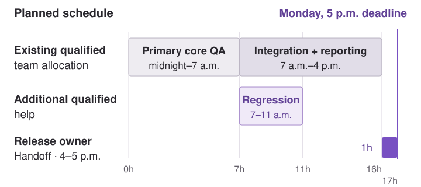
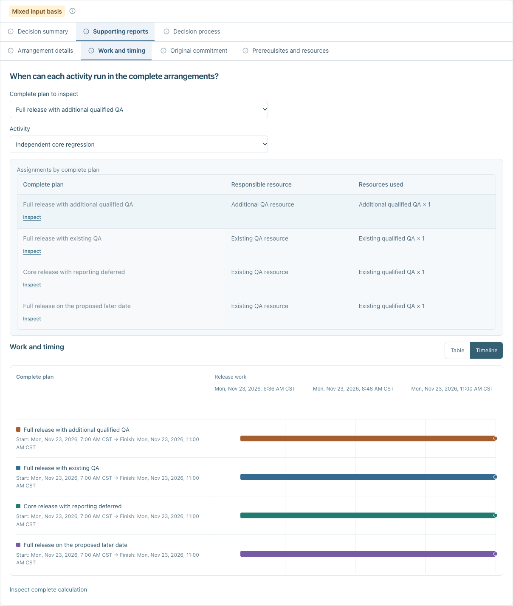
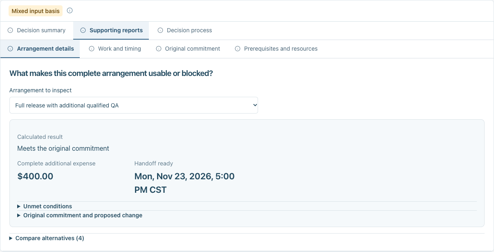
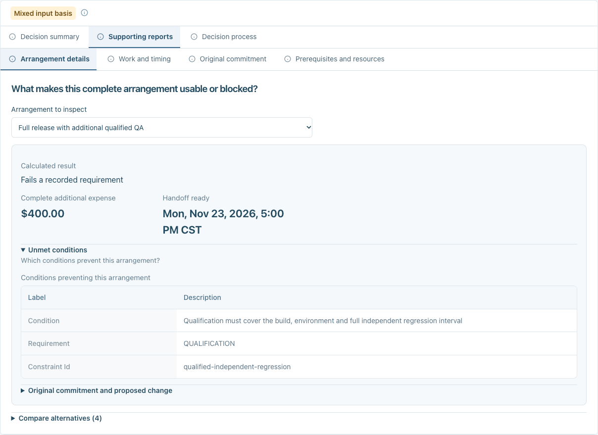

Nina's full-release recovery depends on four hours of external QA. The quoted $400 fits the $500 expense boundary. That sounds like an uncomplicated purchase until the supplier sends a qualification record for a different build.
Engineering still has twenty hours of remaining QA and sixteen hours of existing qualified allocation before handoff. The quote establishes what the engagement would cost. It does not establish whether those four hours satisfy the particular QA assignment. Nina's question is whether this particular help can do the required work.
Identify the work that can actually transfer.
The authored release separates core validation into primary tests, independent regression and integration. Only the fixed four-hour independent-regression package transfers to the additional resource. Existing QA retains the primary work and the integration phase, including reporting QA when reporting is in scope.


Inspect the independent-regression assignment


These are declared working positions on a shared clock. The existing resource represents a qualified team allocation, potentially spanning shifts. The arrangement also requires matching qualifications, complete availability and no conflicting bookings. Adding a person's name does not establish those conditions.
Keep the price, change what the record establishes.
Use the baseline full-release recovery without an accepted scope or date amendment. Compare it with otherwise identical cases in which the external qualification is missing, belongs to another build, or the working interval starts too late.
Shared basis. Release 2026.11 retains core functionality and reporting, a Monday 5 p.m. deadline, 12 + 8 QA hours, the same resource intervals and bookings, a $400 external fee, a $500 limit, and recorded prerequisites and release permission. Neither scope nor date has an accepted revision.
What changes. Only the build named by the external qualification changes: release-2026-11 versus another-build.
Qualification covers this build
The additional-help arrangement passes.
- Qualification build
- release-2026-11
- Fee and regression interval
- $400 · Monday 7–11 a.m.


The complete additional-help response has qualified capacity for the assigned work. It preserves the original promise and reaches the cutoff exactly.
Qualification covers another build
The additional-help arrangement is blocked.
- Qualification build
- another-build
- Fee and regression interval
- $400 · Monday 7–11 a.m.


The qualification does not apply to this build. With the other three arrangements still blocked, none of the supplied responses passes.
What this means for the decision. The extra person helps only when the operating records establish usable capacity for the actual assignment. Price and headcount alone cannot establish that.
| External record | Additional-help finding | Why |
|---|---|---|
| Correct build and environment; full interval covered | Passes | The assigned regression has qualified, available capacity. |
| No external qualification record | Blocked | Qualification for the actual QA work is not established. |
| Qualification names another build | Blocked | It does not cover release-2026-11. |
| Availability begins at 7:01 a.m. | Blocked | The authored regression begins at 7 a.m.; the whole activity is not covered. |
The one-minute difference exposes the condition precisely. It is not a claim that every real release fails after one minute of disruption. This supplied schedule has fixed starts and no modeled deadline slack. A different start, handoff or work package needs an arrangement that actually represents that change.
No passing supplied option is a useful answer.
With unusable external help, full scope still exceeds the existing allocation. Reporting cannot silently disappear, and the later deadline has not been accepted. The calculation therefore finds no passing arrangement among the four supplied choices.
That finding does not prove that every conceivable release plan is impossible. It tells Nina that the currently proposed responses do not establish a commitment under the recorded requirements. She can seek correctly qualified help, negotiate a specific scope or date amendment, or ask for an adapted arrangement with a genuinely different operating structure.
The commitment assessment pattern keeps this distinction reusable: first determine whether complete declared arrangements meet the requirements; then consider a supported response. A cheap resource that fails a required condition never becomes a supported response through price alone.
Nina knows what she must establish before spending.
She can now give procurement a specific request: qualification for release-2026-11 in release-validation, covering the complete 7–11 a.m. assignment on November 23, with availability and bookings consistent with that work. A corrected record must describe the actual situation; changing its label merely to make the report pass would establish nothing.
If those facts are confirmed, Nina updates the inputs and recalculates before relying on a current result. If they cannot be established, she needs another supported response rather than reassurance from the $400 quote. The accepted-scope story shows one legitimate way the available choices can change.